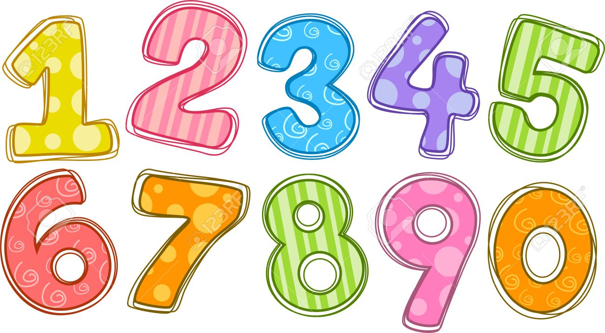

Bilangan Bulat
Bilangan bulat adalah bilangan yang terdiri dari bilangan cacah dan bilangan negatifnya. Sedangkan bilangan cacah adalah bilangan yang dimulai dari angka 0 ,1, 2, 3, 4, .... Negatif dari bilangan cacah adalah -1, -2, -3, -4 .... mengapa -0 tidak dituliskan? Karena -0 = 0 jadi tidak dituliskan sebagai negatif bilangan cacah. Jadi dapat disimpulkan bahwa komponen dari bilangan bulat adalah ... -5, -4, -3, -2, -1, 0, 1, 2, 3, ... Bilangan bulat disebut sebagai bilangan bulat karena ia tidak memiliki anggota pecahan dan desimal. Sampai sini sudah paham ya pengertian dari bilangan bulat? Klik untuk materi lengkapnya